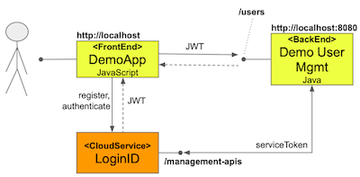

In FIDO2 users may use more than oen authenticator (deice) to access an account. In those cases it is useful to
provide
an interface that enables users to get an overview of authenticators, name them, revoke them.
This page is simple but is fully functional.
This page leverages a backend for its implementation:

The frontend displays the demo screens which are accessed via a browser
The frontend is configured with a Web App ClientID which it uses when
registering/authenticating users
The backend exposes a simple management API and requires an authenticated user (valid JWT)
The backend is configured with a Backend / API Credential and is able to generate
serviceToken
that are required to access LoginID management APIs